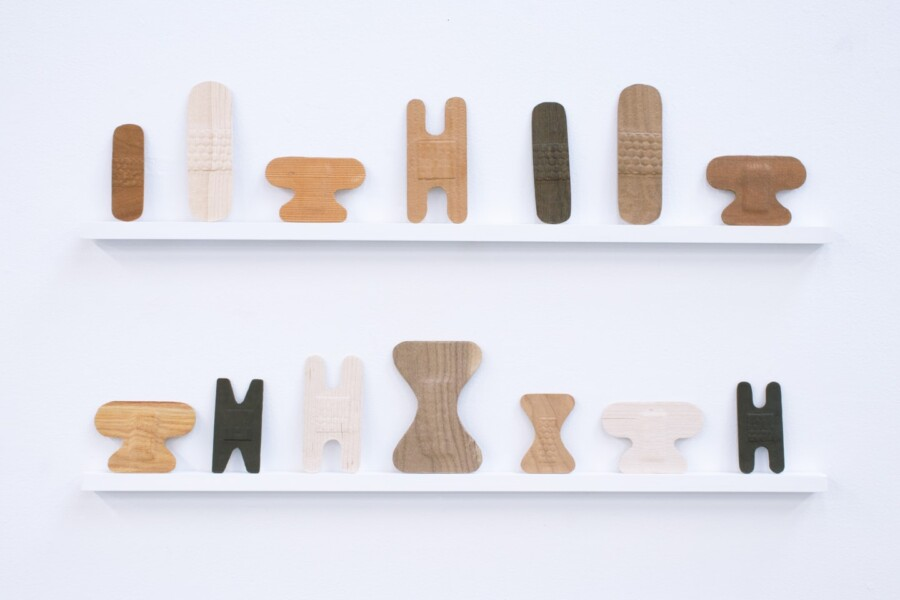

27th International Open – Closing Reception & Walkthrough
Closing Reception & Walkthrough: Saturday, March 28, 2–4 PM CST
Woman Made Gallery (WMG) proudly presents its 27th International Open, a juried exhibition showcasing work in all media by women and non-binary artists from around the world. Juror Nirmal Raja invited works that explore and push conceptual and material boundaries. Featuring 41 artists, the exhibition spans an exciting range of mediums and includes artists from across the United States, along with Canada, Europe, and Hong Kong.
“The most fascinating aspect of an open themed exhibition like this is that it becomes a reflection of the zeitgeist. It has been an absolute pleasure to embark on a visual feast while looking at the submissions. A theme around the countless aspects connected to the body slowly coalesced as I reviewed the art. Most of the work in this exhibition articulates how the body is a site for exploring myriad themes- transience, subjectivity, identity, sexuality, pain, beauty, decay, bondage and more. It is not surprising that in this political moment of vulnerability as a nation highlighted by the fragility of the self, the body becomes a site for expression. These artists push the boundaries of materials and concepts, thoughtfully mirroring the corporeal and also the liminal in innovative and powerful ways. Thank you for the privilege of thinking about this work.” -Nirmal Raja
Exhibition Events
The exhibition opens with a reception at Woman Made Gallery, 1332 S. Halsted St. in Chicago, on Saturday, February 28, from 4 to 7 p.m. Current gallery hours are Wednesdays through Sundays from noon to 5 p.m.
The Closing Reception includes an Artist Walkthrough on Saturday, March 28 from 2 to 4 p.m., offering a final opportunity to meet the participating artists in person. Events at WMG are free and open to the public.
Exhibiting Artists: Katalina Barrera, Shweta Bist, Lauren Petrick Brooks, Amy Cannestra, Julie Carcione, Marcy Chevali, Shannon Cleere, Isabella Covert, Geornica Daniels, Jenie Gao, Lilly Handley, Fion C. Y. Hung, Andrea Jablonski, Natalie Jackson, Indira Freitas Johnson, Jori Jori, Kanishka, Yuliya Klochan, Ling-lin Ku, Xinchen Li, Lue LIKETHEHIGHWAY Khoury, Kimberly Lyle, Valerie Mann, Asia Mathis, Caroline McAuliffe, Kiki McGrath, Naomi Middelmann, Kim Miller, Rebecca Oehler, Gina Lee Robbins, Emma Scarafiotti, Sandrine Schaefer, Andrea Seguraz, Rahimat Onize Shaibu, Meg Stein, Stevia Roxanne, Jessica Swank, Yidi Wang, Lydia Wickham, Isabel Zeng, Sihan Zhang
About the Juror: Nirmal Raja holds a BA in English Literature from St. Francis College in Hyderabad, India, a BFA from the Milwaukee Institute of Art and Design, and an MFA from the University of Wisconsin–Milwaukee. In recognition of her accomplishments, she was named “Graduate of the Decade” by UW–Milwaukee. Other honors include the 2020 Mary L. Nohl Fellowship for Individual Artists and the 2022 Mildred L. Harpole Artists of the Year Award from the Milwaukee Arts Board.